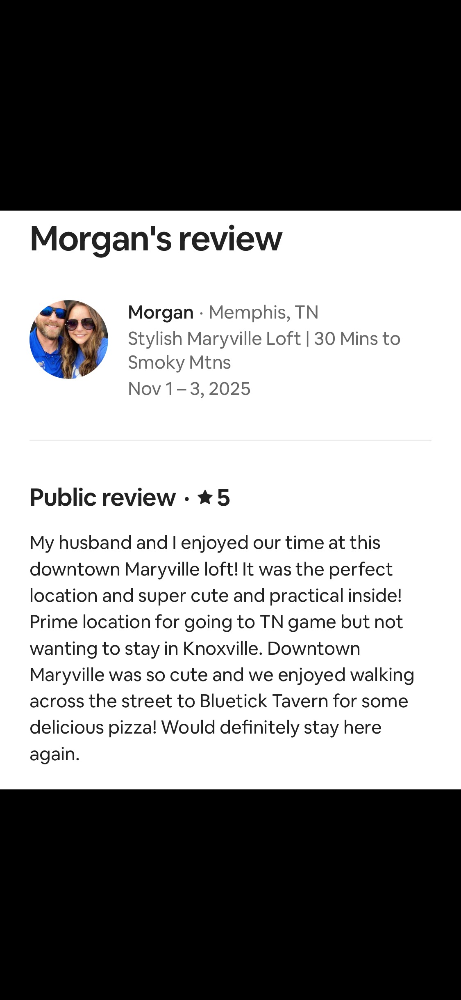
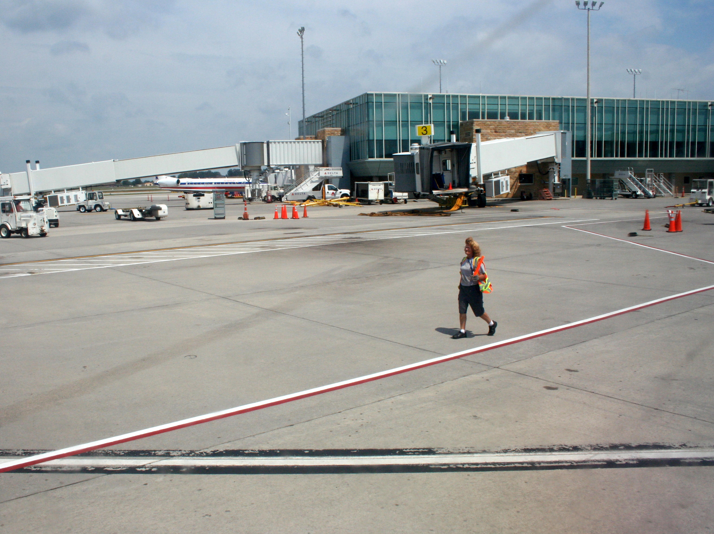

Wake up downtown
Grab coffee, breakfast, or a Greenbelt walk from your Bricks Over Broadway stay before the game day rush starts.

UT football game day lodging
For Tennessee Vols home games, Bricks Over Broadway puts you in walkable downtown Maryville with an easy drive to Foothills Mall shuttle pickup and a calmer place to land after the game.
Best place to stay for a UT game
Knoxville is electric on Tennessee football Saturdays, but parking near Neyland Stadium can be the part nobody wants to solve. Maryville gives you a different rhythm: stay somewhere walkable, eat downtown, drive a short hop to Foothills Mall, and use the game day shuttle service when it is operating.
Simple game day plan
Check the current-season shuttle page before relying on any schedule, then build your day around a few easy moves.
Grab coffee, breakfast, or a Greenbelt walk from your Bricks Over Broadway stay before the game day rush starts.
Foothills Mall is a short, familiar Maryville drive from downtown, which keeps the first leg of the day simple for guests.
Rocky Top Tours publishes Tennessee football shuttle service from Foothills Mall for home games, with buses timed around kickoff.
After the game, return to a quieter downtown base instead of fighting for a hotel room in the thick of Knoxville game traffic.
Shuttle details can change by season, game, weather, and operator. The Rocky Top Tours page is the best place to confirm current pricing, departure windows, pickup details, and availability before you plan your day.
Guest-tested for Vols weekends
"Prime location for going to TN game but not wanting to stay in Knoxville. Downtown Maryville was so cute and we enjoyed walking across the street to Bluetick Tavern for some delicious pizza!"
That is the whole idea of this page: stay somewhere cute and walkable, keep Knoxville game day within reach, and come back to a downtown loft instead of making the whole weekend about traffic and parking.
Find a UT game weekend stay
Where to stay for UT game day
Broadway above Bella is best when you want the most walkable downtown feel for two people. Greenway Village is the better fit for families, friend groups, two-couple trips, and guests who want more room before and after the game.
Compare all rentalsWalk to dinner and coffee, keep the stay simple, and use Maryville as your calm game weekend base.
Two-bedroom layouts, two bathrooms, easy downtime, and a practical setup for longer football weekends.
Why Maryville works
Use the shuttle as the game day tool, then let downtown Maryville handle the rest of the weekend.

Stay near Broadway restaurants, Vienna Coffee, shops, the Capitol Theatre district, and the Greenbelt while still keeping Neyland Stadium in reach.
Open the downtown guide
Maryville is a strong fit for Tennessee fans, visiting fans, alumni, parents, and families who want a calmer overnight base.
Open UT Knoxville lodging
Maryville keeps you close to Alcoa, McGhee Tyson Airport, Maryville College, and family around Blount County while still working for game day.
Search game weekend rentalsGame day FAQ
Yes. Maryville works well for fans who want a quieter overnight base, walkable food and coffee, and convenient access to Foothills Mall shuttle service when it is operating.
Rocky Top Tours publishes Tennessee football shuttle service from Foothills Mall in Maryville. Always confirm the current-season details directly with the shuttle operator before game day.
Yes. Bricks Over Broadway offers downtown Maryville short term rentals for guests comparing hotels, Airbnb, AirBnB, Vrbo, VRBO, and direct-book places to stay for UT game weekends.